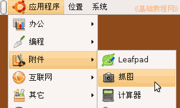

电脑操作基础
作者：TeliuTe 来源：基础教程网
十九、抓图 返回目录 下一课有时候我们需要在Ubuntu里，抓取桌面或窗口的图片，下面我们来看一个练习；
1、抓图
1）点菜单“应用程序－附件－抓图”，启动抓图软件；
2）出来一个抓图对话框，询问是抓取桌面还是抓取窗口，
选好以后，点右下角的“抓图”按钮；
3）等一下，抓图完成，出来一个保存对话框；
4）保存的文件名是 Screenshot1.png ，保存的位置是图片文件夹，点“保存”按钮；
5）然后点菜单“位置－书签－图片”，进入图片文件夹，里面就可以看到刚才抓取的图片；
6）保存的图片是png格式，还可以用GIMP打开进一步修改，或另存为其他格式图片；
本节学习了在Ubuntu中抓图的基本操作，如果你成功地完成了练习，请继续学习下一课内容；本教程由86团学校TeliuTe制作|著作权所有
基础教程网：http://teliute.org/
美丽的校园……
转载和引用本站内容，请保留版权信息和本站链接。